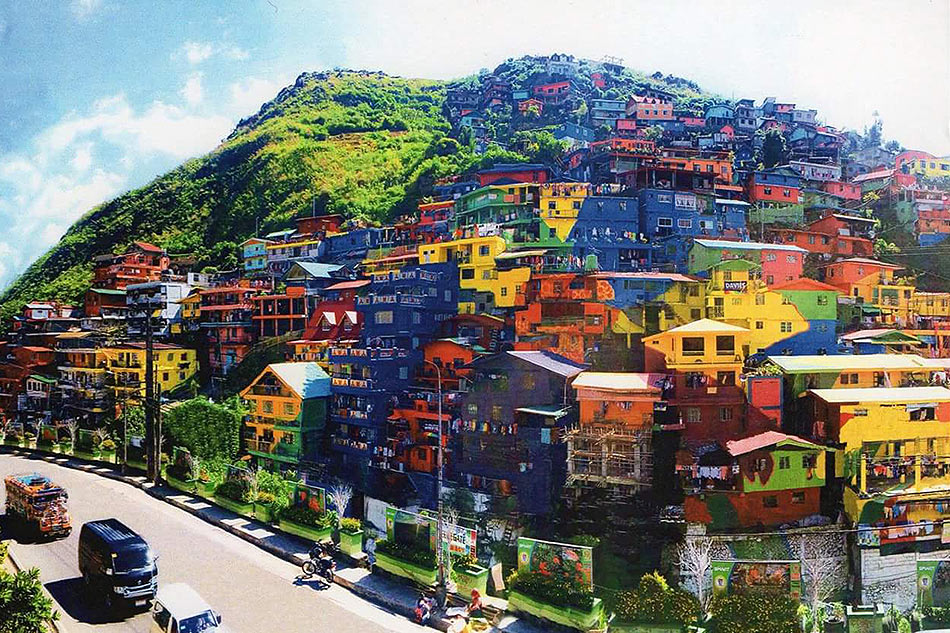
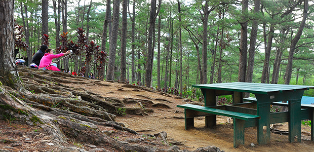
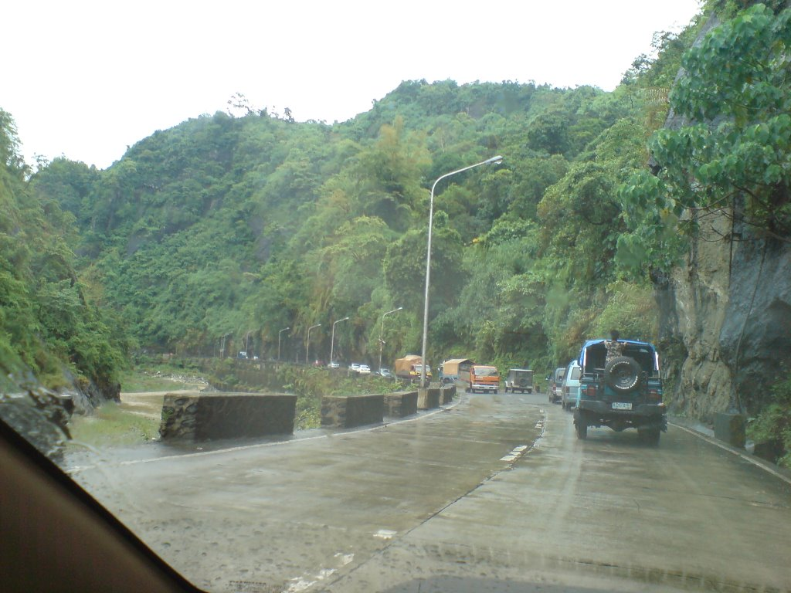

Colors of La Trinidad
One of the popular areas featured from the news and recognizable for it's colorful houses and neighborhood that looks striking to the viewers' eye, and also for tourists too!
Camp John Hay
Surrounded by tall trees and nature's green life, this is the place for campers, hikers, adventurers and everyone who wants to head out for a breathtaking fresh air activity.
Kennon Road
If you're heading outside of Baguio City and going en route to Bauang, La Union, this highway will lead you to it. I advise for safe driving and travels when going here on the wheel.
About
Welcome to "Baguio City Adventures and Exploration"! We provide our guests, adventurers and viewers like you to check out the various landmarks and iconic areas of Baguio City! Located here in the Northern Luzon, on top of the mountains.
History
Starting off as a fun project for adventures who want to promote and showcase the city to show more recognition and appeal and started as a small business as tour guides today.
Branch
We are currently working online in a remote location, so we do not have a specific location to visit in-person.
Got any Questions?
Have any questions and queries in mind? Don't hesitate to ask us. We are sure to answer every questions and queries you have for the safety and fun experience of your adventure.